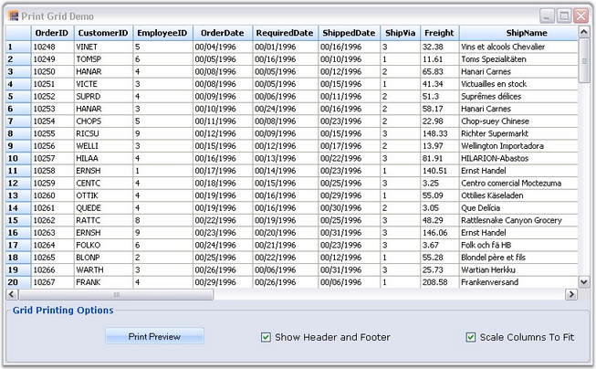
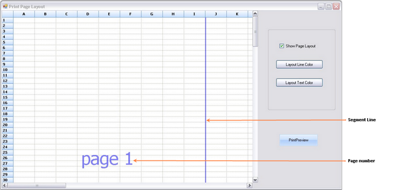
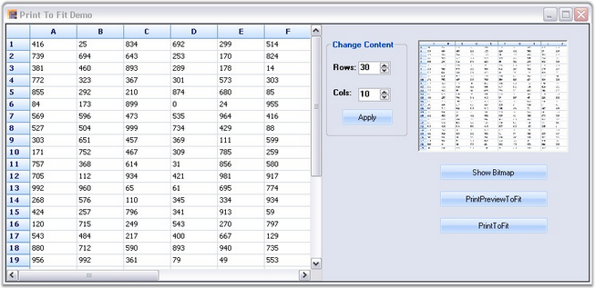

Essential Grid directly supports printing and print previews through the .NET Framework classes Systems.Windows.Forms.PrintPreviewDialog and Systems.Windows.Forms.PrintDialog. A derived PrintDocument, GridPrintDocument is passed to these classes. This GridPrintDocument implements the printing logic that is needed to print multi-page grids.
Following code example illustrates how to enable print previewing.
1. Using C#
|
[C#]
// PrintPreview button handler. private void PrintPreview_Click(object sender, System.EventArgs e) { if (this.gridControl1 != null) { try { // Uses the default printer. GridPrintDocument pd = new GridPrintDocument(this.gridControl1, true); PrintPreviewDialog dlg = new PrintPreviewDialog() ; dlg.Document = pd; dlg.ShowDialog(); } catch(Exception ex) { MessageBox.Show("An error occurred attempting to preview the grid - " + ex.Message); } } }
private void Print_Click(object sender, System.EventArgs e) { if (this.gridControl1 != null) { try { GridPrintDocument pd = new GridPrintDocument(this.gridControl1, true); PrintDialog dlg = new PrintDialog() ; dlg.Document = pd; if( dlg.ShowDialog() == DialogResult.OK) pd.Print(); } catch(Exception ex) { MessageBox.Show("An error occurred attempting to print the grid - " + ex.Message); } } } |
2. Using VB.NET
|
[VB.NET]
' PrintPreview button handler. Private Sub PrintPreview_Click(ByVal sender As Object, ByVal e As EventArgs) If (Not (gridControl1) Is Nothing) Then Try Dim pd As GridPrintDocument pd = New GridPrintDocument(gridControl1, True)
'Uses the default printer. Dim dlg As PrintPreviewDialog dlg = New PrintPreviewDialog() dlg.Document = pd dlg.ShowDialog()
Catch ex As Exception MessageBox.Show(("An error occurred attempting to preview the grid - " + ex.Message)) End Try End If End Sub
' Print button handler. Private Sub Print_Click(ByVal sender As Object, ByVal e As EventArgs) If (Not (gridControl1) Is Nothing) Then Try Dim pd As GridPrintDocument pd = New GridPrintDocument(gridControl1, True)
' Uses the default printer. Dim dlg As PrintDialog dlg = New PrintDialog() dlg.Document = pd If dlg.ShowDialog() = DialogResult.OK Then pd.Print() End If
Catch ex As Exception MessageBox.Show(("An error occurred attempting to print the grid - " + ex.Message)) End Try End If End Sub |
Grid Helper Features
The following are the features of the Grid Helper that supports print preview and printing:
· Advanced printing
· Page layout
· Print Column To Fit
Advanced Printing
Multiple grids can be printed across various pages using the helper class GridPrintDocumentAdv. This is achieved by drawing the full size grid to a large bitmap and then scaling this bitmap to fit the output page.
· The Print Preview can be enabled by using GridPrintDocumentAdv class or by clicking the Print Preview button under the Grid Printing Options in the UI.
· Columns can be specified to fit in a single page using the ScaleColumnsToFitPage property or selecting the Scale Columns To Fit check box on under the Grid Printing Options in the UI.
· Headers and footers can be added by using the DrawGridPrintHeader and DrawGridPrintFooter events or by selecting the Show Header and Footer check box under the Grid Printing Options in the UI.
Following code example illustrates Advanced Printing in Grid.
1. Using C#
|
[C#]
Syncfusion.GridHelperClasses.GridPrintDocumentAdv pd = new Syncfusion.GridHelperClasses.GridPrintDocumentAdv(this.gridControl1); pd.DefaultPageSettings.Margins = new System.Drawing.Printing.Margins(25, 25, 25, 25); pd.HeaderHeight = 70; pd.FooterHeight = 50;
pd.ScaleColumnsToFitPage = true;
PrintPreviewDialog previewDialog = new PrintPreviewDialog(); previewDialog.Document = pd; previewDialog.Show(); |
2. Using VB.NET
|
[VB.NET]
Dim pd As Syncfusion.GridHelperClasses.GridPrintDocumentAdv = New Syncfusion.GridHelperClasses.GridPrintDocumentAdv(Me.gridControl1) pd.DefaultPageSettings.Margins = New System.Drawing.Printing.Margins(25, 25, 25, 25) pd.HeaderHeight = 70 pd.FooterHeight = 50
pd.ScaleColumnsToFitPage = True
Dim previewDialog As PrintPreviewDialog = New PrintPreviewDialog() previewDialog.Document = pd previewDialog.Show() |
Following screen shot illustrates Advanced Printing functionality provided by the GridPrintDocumentAdv class.

Figure 182: Print Grid
Page Layout
The print Page Layout feature helps to view the printing layout for the grid by displaying a segment line and a page number with each segment. This helps users to analyze page breaks within the grid and manage them accordingly. Colors for the line and text of the page layout can be defined with the properties available. Following code example illustrates this.
1. Using C#
|
[C#]
LayoutSupportHelper layoutHelper; layoutHelper = new LayoutSupportHelper(gridControl1); layoutHelper.LineColor = Color.Blue; layoutHelper.TextColor = Color.Green; |
2. Using VB.NET
|
[VB.NET]
Dim layoutHelper As LayoutSupportHelper layoutHelper = New LayoutSupportHelper(gridControl1) layoutHelper.LineColor = Color.Blue layoutHelper.TextColor = Color.Green |
Following screen shot shows the page layout of the grid, with the segment line and page number.

Figure 183: Print Page
 Note: The functionality mentioned above can also
be achieved on UI by selecting Show Page Layout check box on the UI, which
allows the user to view the page layout.
Note: The functionality mentioned above can also
be achieved on UI by selecting Show Page Layout check box on the UI, which
allows the user to view the page layout.
Print To Fit
An entire grid can be printed on a single page by deriving GridPrintDocument class to handle the printing of entire grid on a single page. The class achieves this by drawing the full-size grid to a large bitmap and then scaling the same to fit the output page. Following code example illustrates this.
|
[C#]
GridPrintToFitDocument pd = new GridPrintToFitDocument(this.gridControl1, true); PrintDialog dlg = new PrintDialog(); dlg.Document = pd; if (dlg.ShowDialog() == DialogResult.OK) pd.Print(); |
|
[VB.NET]
Dim dlg As PrintDialog = New PrintDialog() dlg.Document = pd If dlg.ShowDialog() = DialogResult.OK Then pd.Print() End If |
Following screen shot illustrates the Grid's Print To Fit feature.

Figure 184: Print To Fit
This functionality can also be achieved by clicking the PrintToFit button on the UI. Refer Figure 3 on this page.